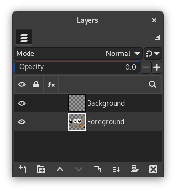

|

|
 |
| 2.4. O desenhável ativo não está visível |

|
2.6. Você está tentando agir fora de uma camada |
Figura 4.4. Opacidade da camada definida como zero

Diálogo de camada com opacidade zero configurada para a camada ativa
Como saber: Quando a opacidade estiver configurada para 0 na camada, você não pode ver nada do que for desenhado na mesma. Veja o controle de Opacidade, no diálogo de camadas, e que valor ele está indicando. Se o controle estiver todo para a esquerda (opacidade zero), ai está o seu problema.
Como resolver: Mova o controle